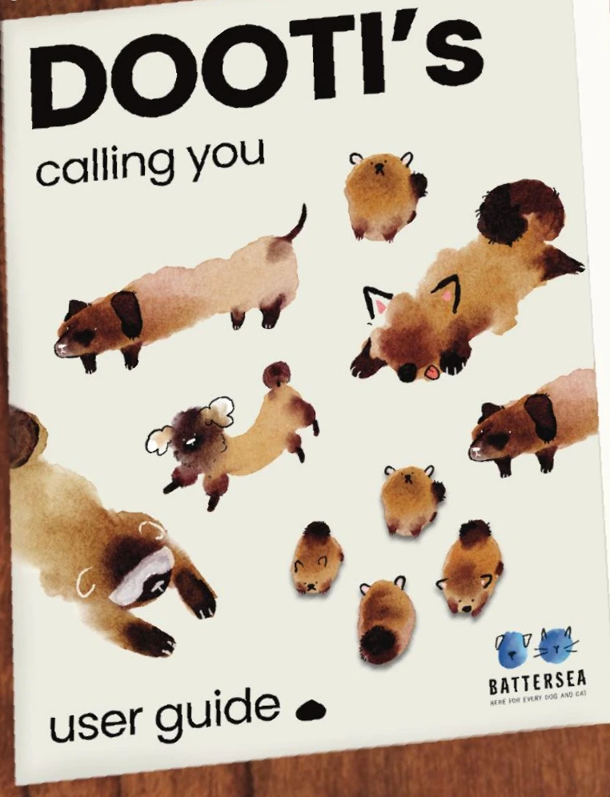
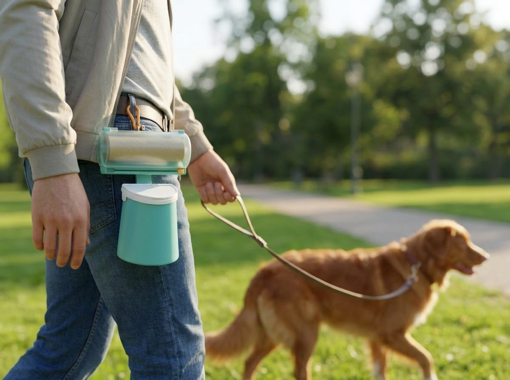
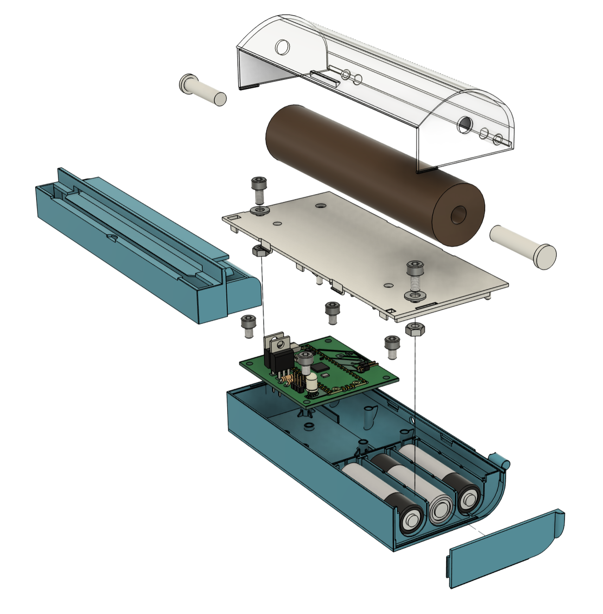
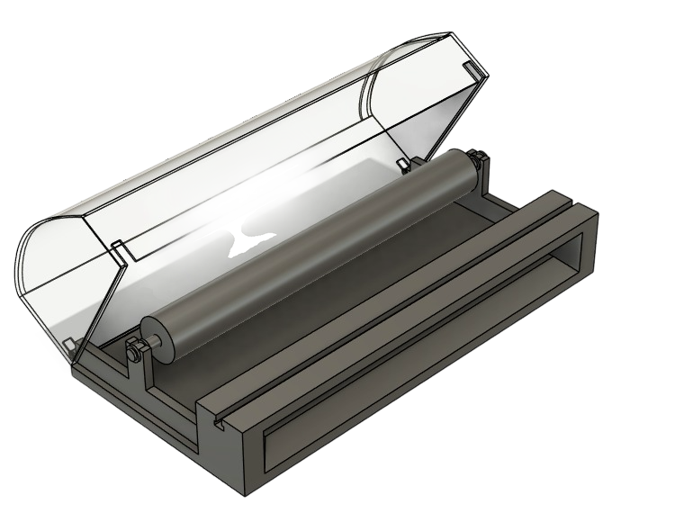
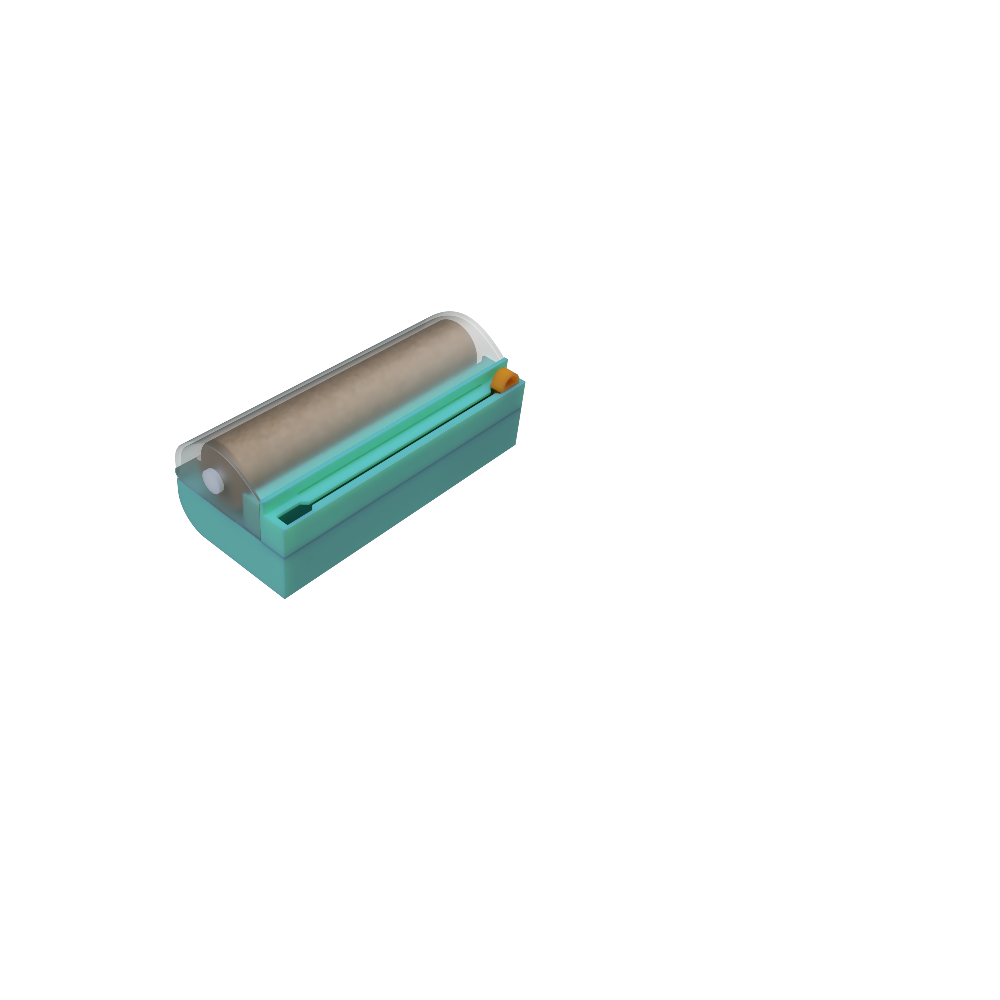
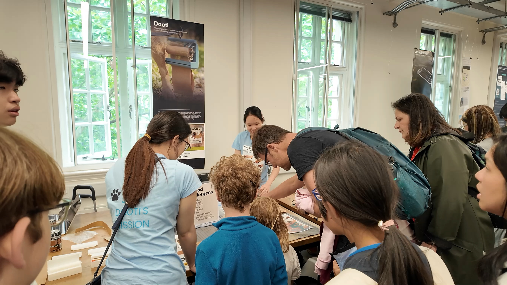
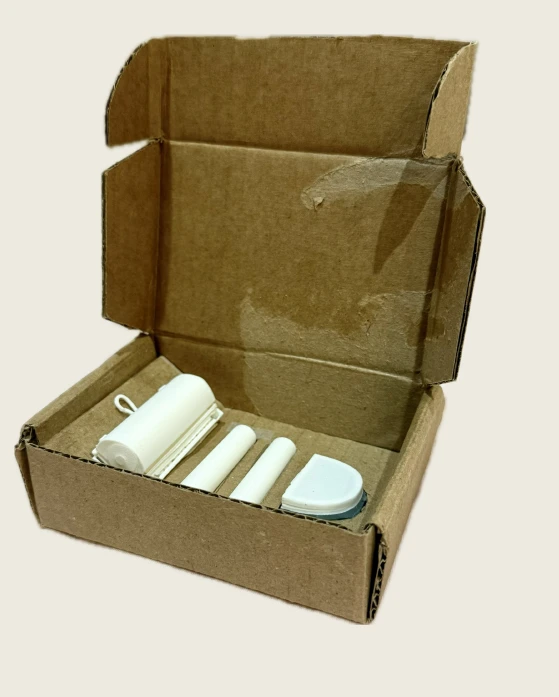
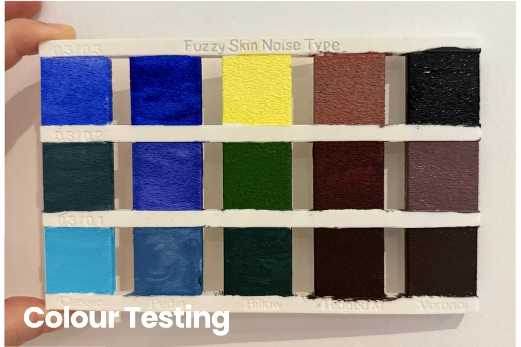
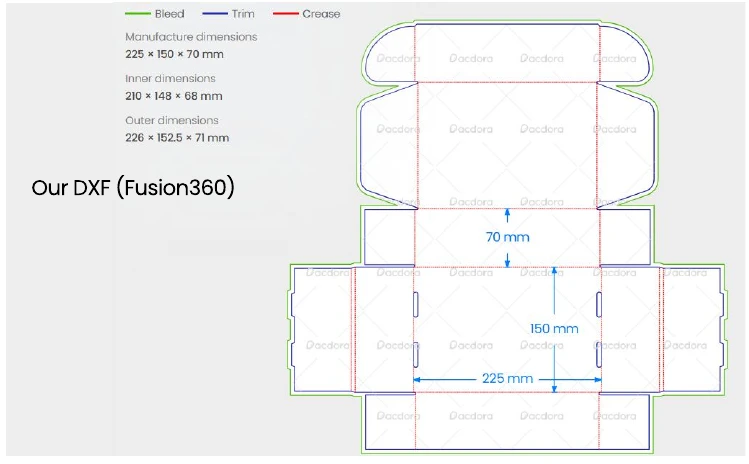

A warmer visual language
“Dooti Calls” pairs a playful name with a simplified wordmark and watercolour dogs, developed after users found the first mascot too complex.
Original guide study · Battersea was a proposed collaboration.
A better walk.
From pick-up to carry-home.

A handheld system that makes bags to size, seals them and keeps used bags discreetly contained.
01 / EXPERIENCE THE PRINCIPLE
Choose a bag length, then seal and cut. The continuous refill adapts to the task.
Interactive concept · Proportions are illustrative.
Choose a length to suit the task.
02 / RESOLVE THE PRODUCT SYSTEM
Make the bag, seal it, then carry it discreetly. Select a component to explore the system.

FINAL ARCHITECTURE / REFILL ROLLMATERIAL EFFICIENCY
Users select the length of compostable refill material to suit different dog sizes. The design aims to avoid the excess of a fixed, oversized bag.
03 / INITIAL USER RESEARCH
8 interviews and 80+ survey responses explored discomfort around collecting, carrying and disposing of dog waste. The brief: make the whole routine feel less unpleasant.
04 / PROTOTYPING & USER VALIDATION
Once dispensing, sealing and cutting worked, user testing helped us find the most suitable way to pick up waste.

Establish the handheld proportions and arrange the roll within a portable enclosure.

Develop dispensing, sealing and cutting within the handheld form.
Integrate the blade, heat wire, electronics and casing, with clearances and alignment features for assembly.

USER FEEDBACK → PICK-UP METHOD
With the core functions developed, participants tried picking up simulated waste and shared difficulties and suggestions.
Feedback led us to separate the layers: use the paper to collect waste, then place it inside the film bag.
Carrying feedback also informed the detachable pouch.
05 / BRANDING & PACKAGING
A friendly identity makes an awkward task approachable. Simple packaging helps users unpack, understand and start using the system.

“Dooti Calls” pairs a playful name with a simplified wordmark and watercolour dogs, developed after users found the first mascot too complex.
Original guide study · Battersea was a proposed collaboration.

A removable paper sleeve, folded cardboard box and fitted insert protect the parts and separate easily. An illustrated guide explains setup, use and care.
Half-scale packaging prototype · Fit and access.
A textured grip, translucent lid and invertible silicone pouch support handling, status visibility and cleaning.

Die-cut folds and interlocking tabs reduce assembly steps. The half-scale model took 1:50 at its fastest, using pre-cut, pre-creased parts. Packaging was estimated at £0.257 per unit for 1,000 units.

Prototype timing and report cost estimate; production validation remains pending.
06 / SAFETY & COMPLIANCE
Safety and clear information are part of the product experience. These are prototype design considerations; formal conformity assessment remains pending.
An enclosed blade, shielded sealing area, timed heating and thermistor feedback address cutting and heat risks.
Removable batteries and separable electronics support recovery. Labels distinguish the device, refill and packaging.
The refill aims to reduce excess material. Material savings and compostability need validation of the complete construction.
Next: longer walk trials, seal durability, cleaning, packaging transit tests and product safety assessment.
References: UK product safety · CMA Green Claims Code.